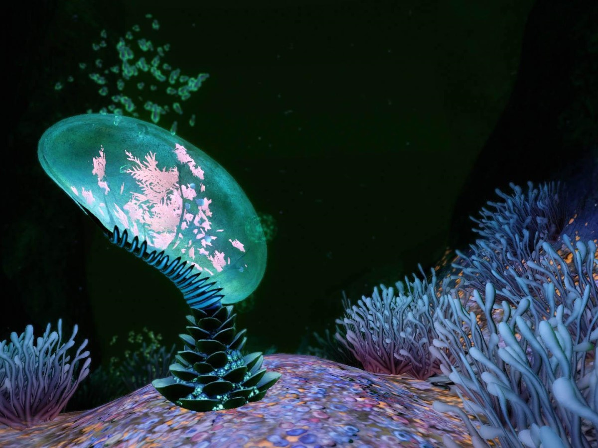
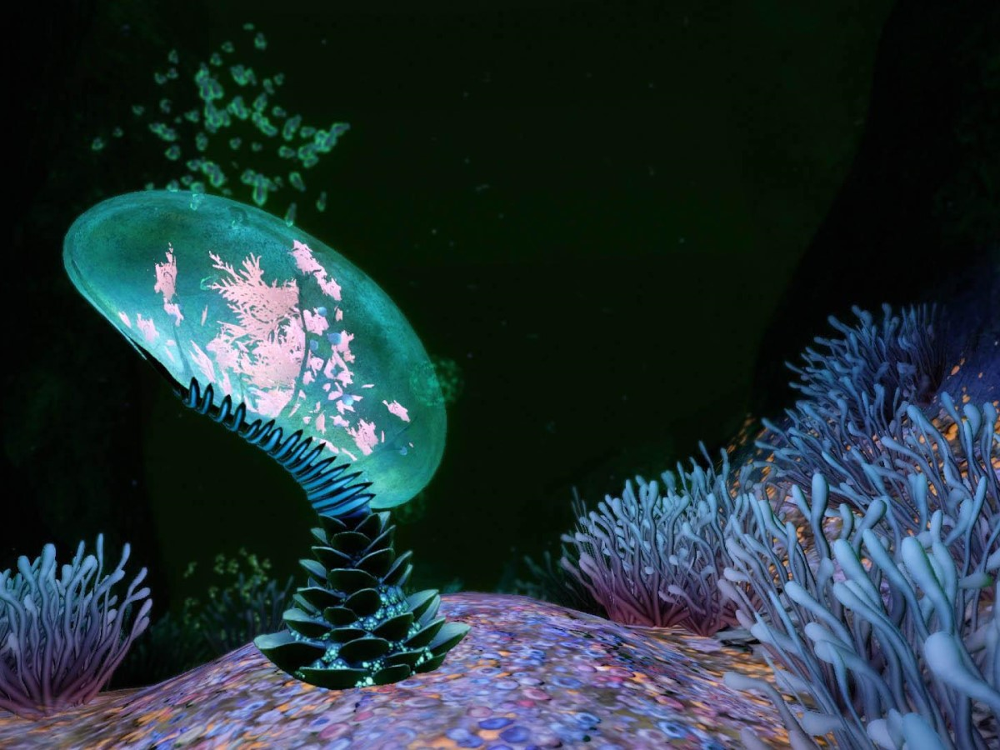

What Are Resources and What is Crafting?
In Subnautica resources are anything the player can pick up that they cannot use as a tool. These resources can come from the various plants (flora) of the world as well as mined from rocks or scavenged from debris.
Crafting is when the player takes those resources and uses them at a fabricator or some other crafting station to make tools and other resources. At the beginning of the game, the list of things to craft may seem small, but there are many blueprints to collect throughout the world of new craftable items.